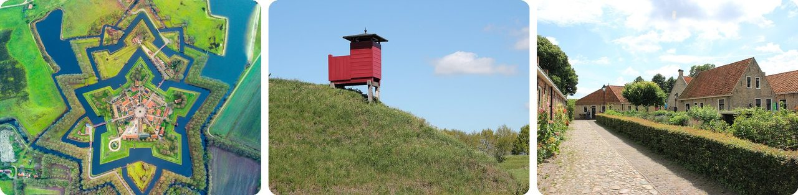
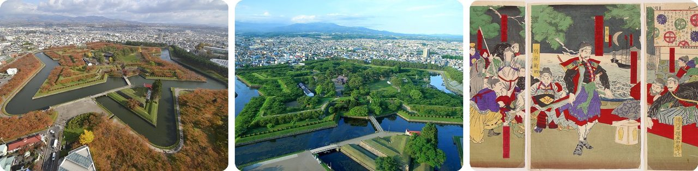
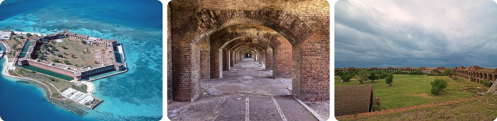
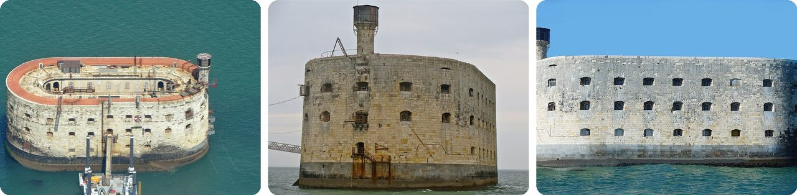
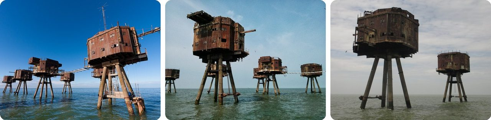
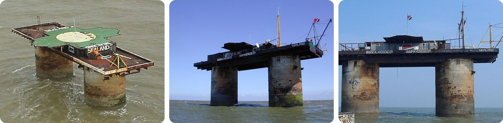
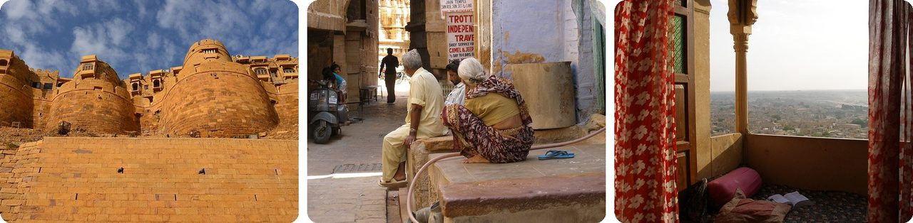
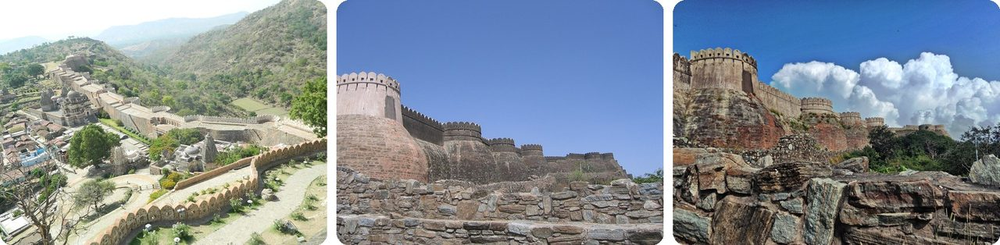
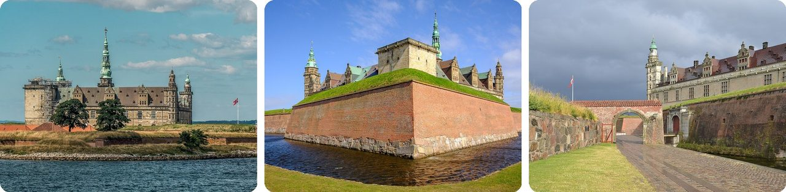
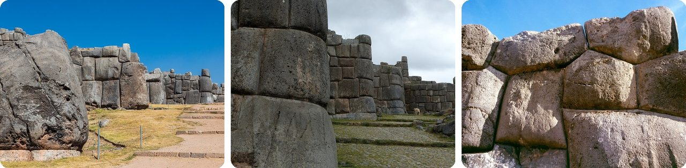

🌍 Top 10 Forts
Oct 1, 2026
1. 🇳🇱 Bourtange guarded the only dry road through a swamp

In 1593, during the Dutch revolt against Spain, William of Orange wanted to cut the road between Germany and Spanish-held Groningen. That road ran along a single sandy ridge through the Bourtange marshes.
So he built a fort right on the ridge. Anyone coming through had to pass it, because everything around it was bog. Even the name says so: tange is Dutch for "sand ridge."
The fort was given up in 1851 and slowly became a run-down village. Then, starting in 1967, the Dutch spent 25 years rebuilding it exactly as it looked around 1740–1750. About 430 people live there today, inside a star-shaped open-air museum.
Basically, a whole village got a time-machine makeover.
2. 🇯🇵 Japan's star fort ended up selling its moat as ice

Goryōkaku in Hakodate means "five-point fort." Its designer, Takeda Ayasaburō, was a scholar of Rangaku (Western science learned from Dutch books), and he copied the star forts of Europe.
The star shape had a purpose: the angled points fit more cannons on the walls and leave fewer blind spots where an attacker could hide. It took seven years to build and was finished in 1866.
Three years later it was the capital of the Republic of Ezo, a breakaway state that lasted only during 1869, and the site of the last battle of Japan's civil war. After that, the fort sat unused, so locals cut ice from the frozen moat each winter and sold it on Japan's main island as "Goryōkaku Ice."
In other words, a fort built for war became an ice factory.
3. 🇺🇸 The biggest brick building in the Americas sits on a tiny island

Fort Jefferson sits on a tiny island 109 km (68 miles) west of Key West, Florida. It's the largest brick building in the Americas, made of more than 16 million bricks. Laid end to end, they'd run about 3,200 km.
Construction started in 1846 and dragged on for decades. By 1872 the walls held 243 big guns.
There's no fresh water on the island, so the walls had sand-filled columns to filter rain into tanks. But salt from the sand, or leaks in the tanks, spoiled it, and the water was fit only for washing and cooking. During the Civil War it became a prison instead, and in 1865 it held Dr. Samuel Mudd, convicted of helping Lincoln's assassin.
Picture a huge castle that ended up as an island jail.
4. 🇫🇷 Fort Boyard was useless the moment it was finished

Fort Boyard stands on a sandbank in the sea off western France. It was meant to fill a gap: the cannons on the nearby islands couldn't reach the middle of the channel.
Louis XIV's top engineer warned it would be "easier to seize the moon with your teeth" than to build there. Napoleon tried anyway in 1801. Work stopped and started again, and the fort was finished only in 1857, 56 years later.
And here's the twist. By the time soldiers moved in, cannons had become strong enough to cover the gap from the islands. The fort wasn't needed. It was abandoned in 1913, and workers later had to scrape off a 50 cm layer of bird poop. Since 1990, it's been the set of the TV game show Fort Boyard.
It's like finishing a bridge just after someone builds a tunnel next to it.
5. 🏴 England's sea forts on stilts became pirate radio stations

During World War II, engineer Guy Maunsell designed gun forts that stand in the sea at the mouth of the River Thames. The army versions are seven steel boxes on legs, once joined by metal walkways, to shoot down German planes following the river to London.
After the war they sat empty. In the 1960s, pirate radio DJs moved in. The towers were perfect for it: you could mount a big antenna on the middle tower and tie it to the others.
Radio Sutch started at Shivering Sands in 1964, and Radio 390 broadcast from Red Sands from 1965 to 1967. Red Sands even played a gas refinery under attack by killer seaweed in Doctor Who.
Think of it as a war machine turned into a rock station.
6. 👑 A man declared his own country on an old sea fort

Roughs Tower is a WWII sea fort about 11 km off the coast of Suffolk, England. In 1967, Roy Bates kicked out a rival pirate radio crew and declared it the Principality of Sealand.
In 1968, his son fired warning shots at workers servicing a nearby buoy. A British court said it couldn't punish him, because the fort was outside Britain's waters, which then reached only about 5.5 km (3 nautical miles) from shore.
So Sealand went all in: a constitution, a flag, an anthem, money and passports by 1975. In 1987, Britain stretched its waters out to 12 nautical miles, putting the fort back on British territory. As of 2024, Sealand had one full-time resident.
It's a tiny country made of two concrete legs and one big loophole.
7. 🇮🇳 About 4,000 people still live inside Jaisalmer Fort

Jaisalmer Fort sits on a hill in the Thar Desert in Rajasthan. It was built in 1156 from yellow sandstone, which turns honey-gold at sunset and blends into the desert around it. Locals call it the Golden Fort.
For most of its 860 years, the fort was the city. Houses outside the walls only began in the 1600s. Today about 4,000 people still live inside, with shops, homes and seven Jain temples.
That's also its problem. The fort stands on soft rock, and water seeping into its foundations, made worse by the crowds living there, is wearing it away. Parts have already collapsed, including the Queen's Palace.
Basically, it's a castle that never stopped being a neighborhood.
8. 🇮🇳 Kumbhalgarh has a 36 km wall around a mountain fort

Kumbhalgarh sits on a ridge of the Aravalli Hills in Rajasthan, 1,100 m above sea level. Rana Kumbha, ruler of Mewar, ordered it built in 1448.
Its outer wall runs 36 km (22 miles), one of the longest continuous walls in the world. Walking all of it would take a full day. Inside are more than 360 Hindu and Jain temples.
Armies tried to take it in 1457, 1458–59 and 1467, and all failed. It finally fell in 1578, after a six-month siege by the Mughal emperor Akbar's general, and was taken back five years later.
No wonder it's nicknamed the Great Wall of India.
9. 🇩🇰 Hamlet's castle made every passing ship pay a toll

Kronborg in Helsingør, Denmark, stands where the sea channel into the Baltic is only 4 km wide. Every ship going in or out had to pass its guns, and pay the Danish king a toll called the Sound Dues.
The toll was based on the cargo's value, as stated by the captain. The clever bit: the king had the right to buy the cargo at that price. Say it's worth too little and you might lose your whole load cheap. So captains told the truth.
Shakespeare set Hamlet here, calling it Elsinore. The play was first staged at the castle in 1816, performed by the soldiers who lived there.
Think of it as a toll booth where lying about your bags meant losing them.
10. 🇵🇪 The walls of Sacsayhuamán fit so tight a sheet of paper won't slip in

Sacsayhuamán sits on a hill above Cusco, the old Inca capital, at 3,701 m. In the 1400s, Inca builders stacked huge stones into three terrace walls, the longest about 400 m long and 6 m tall.
They used no mortar. Each block was cut to lock into its neighbors, so tightly that a single sheet of paper won't fit between many of them. The biggest block weighs an estimated 128 to 200 tonnes, about as much as a blue whale.
The rounded corners, interlocking shapes and inward-leaning walls are thought to be why they've survived Cusco's earthquakes. A Spanish writer recorded 20,000 workers taking turns on the job.
It's a 3D jigsaw puzzle with no glue that has held for over 500 years.
Fun fact
In 1978, a German lawyer who called himself Sealand's prime minister hired mercenaries to storm the fort while Roy Bates was away. They took his son Michael hostage, but Michael managed to retake the platform and capture the lawyer. Germany then sent a diplomat to negotiate his release, which Bates proudly claimed as proof that Germany had recognized his country. Next time: the world's strangest micronations.
Photo credits (Wikimedia Commons)
- #1: Крепость Буртанж (вид сверху).jpg by Dack9, CC BY 4.0
- #1: Festungsanlage Bourtange - Vesting Bourtange.jpg by Sascha Grosser, CC BY-SA 4.0
- #1: Festung Bourtange - panoramio (8).jpg by Helfmann, CC BY-SA 3.0
- #2: Hokkaido-Goryokaku Fort in Autumn-xl.jpg by Goryokaku-Tower, CC BY 4.0
- #2: Hakodate Goryokaku Panorama 1.JPG by Keihin nike, CC BY-SA 3.0
- #2: Surrender of Goryokaku (by the Ezo rebels) by Hayakawa Shozan 1877.png by Hayakawa Shōzan (1850-1892), (Signature: 松月保誠 Shōgetsu Yasusei), Public domain
- #3: Fort-Jefferson Dry-Tortugas.jpg by U.S. National Park Service, Public domain
- #3: Fort Jefferson FL11.jpg by Acroterion, CC BY-SA 4.0
- #3: Fort Jefferson Courtyard November 2019.jpg by Daniel Kraft, CC BY-SA 3.0
- #4: Fort Boyard from F-GHAC.jpg by ERIC SALARD, CC BY-SA 2.0
- #4: Fort Boyard face.JPG by Jebulon, CC BY-SA 3.0
- #4: Fort Boyard en2013.jpg by Pierre André Leclercq, CC BY-SA 4.0
- #5: Redsandsforts.jpg by Russss, CC BY-SA 3.0
- #5: Maunsell Sea Forts 2013.jpg by Steve Cadman, CC BY-SA 2.0
- #5: Two Maunsell forts (flickr) by Matt From London, CC BY 2.0
- #6: Sealand aerial view.jpg by Ryan Lackey, CC BY 2.0
- #6: Sealand.jpg by Ryan Lackey from San Francisco, CA, US, CC BY 2.0
- #6: Sealandafterfire2.JPG by Richard Lazenby, Public domain
- #7: Jaisalmer Fort, India.jpg by Clément Bardot, CC BY-SA 4.0
- #7: Jaisalmer, India, Jaisalmer Fort, Passage.jpg by Vyacheslav Argenberg, CC BY 4.0
- #7: Jaisalmer, India, Jaisalmer Fort, Balcony.jpg by Vyacheslav Argenberg, CC BY 4.0
- #8: The great wall of Kumbhalgarh Fort.jpg by Kanika Gaur, CC BY-SA 4.0
- #8: Walls of Kumbhalgarh.jpg by Shivam Chaturvedi – Aryarakshak at English Wikipedia, CC BY-SA 3.0
- #8: Kumbhalgarh Bastions.png by Aditya Gwalior, CC BY-SA 4.0
- #9: Kronborg Castle-20140723-RM-150812.jpg by Ermell, CC BY-SA 4.0
- #9: Kronborg April 2026 06.jpg by ArildV, CC BY-SA 4.0
- #9: Kronborg castle, Helsingør, Denmark.JPG by Pudelek, CC BY-SA 4.0
- #10: Sacsayhuamán, Cusco, Perú, 2015-07-31, DD 05.JPG by Diego Delso, CC BY-SA 4.0
- #10: Sacsayhuaman (pixinn.net).jpg by Christophe Meneboeuf, CC BY-SA 2.5
- #10: Sacsayhuaman-c03.jpg by Colegota, CC BY-SA 2.5 es
.jpg){kind=link}

.jpg){kind=link}


_by_Hayakawa_Shozan_1877.png){kind=link}


.jpg){kind=link}